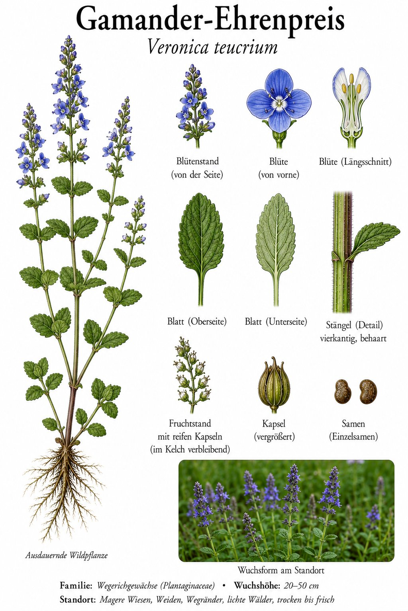
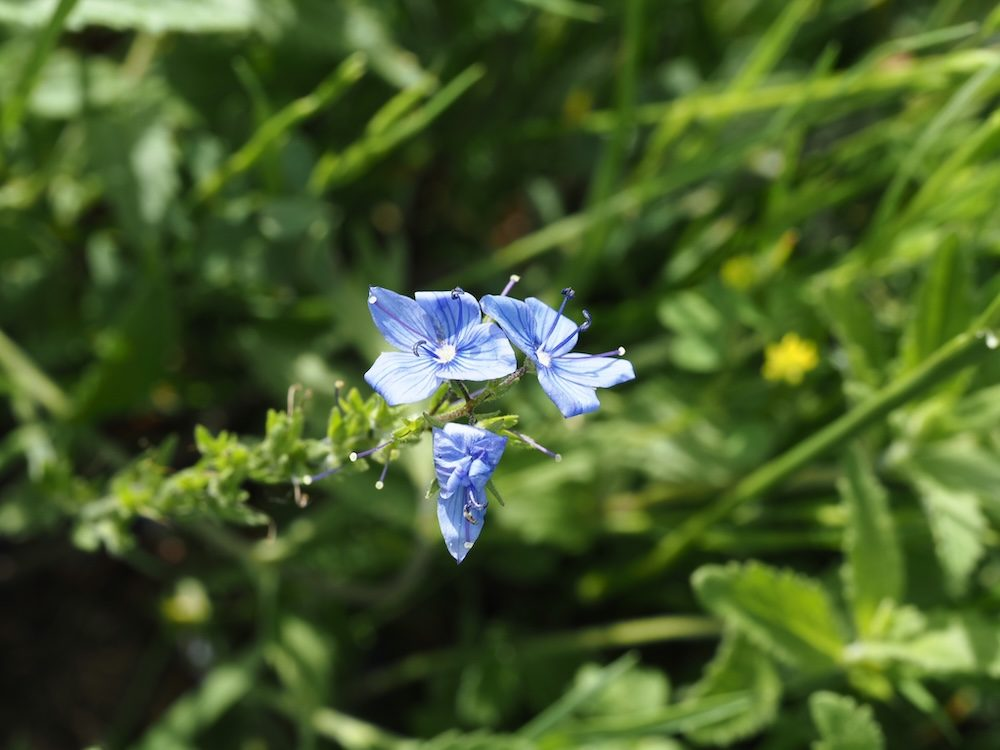

Leuchtend blaue Ähren — das Kraut, das mehr versprach, als es halten konnte.


Ein kräftiges Blau
Anders als der zierliche Gamander-Ehrenpreis stellt der Große Ehrenpreis seine intensiv blauen Blüten in dichten, aufrechten Trauben zur Schau. Jede Blüte hat vier ungleiche Zipfel und zwei weit herausragende Staubblätter. Auf sonnigen Magerrasen und an Säumen leuchtet er weithin.
Veronikas Schweißtuch
Der wissenschaftliche Name Veronica wird gern mit der heiligen Veronika in Verbindung gebracht, deren Tuch das Antlitz Christi zeigte — die Blütenzeichnung soll daran erinnern. Bei der Bestäubung sind die Pflanzen wahre Insektenmagnete. Schon ein leichter Windstoß lässt die zarten Blüten abfallen.
Wissenswertes & Merksätze
Erkennungszeichen
Aufrechte, bis 50 cm hohe Pflanze mit kräftig blauen Blüten in dichten, achselständigen Trauben; Blätter gegenständig, gekerbt-gesägt und fast sitzend.
Großer Name, kleine Beweise
„Ehrenpreis“ heißt so viel wie „den Preis verdienend“ — die alten Kräuterbücher lobten die Pflanze als Allheilmittel gegen fast alles. Geblieben ist von dem großen Versprechen vor allem ihre Schönheit.